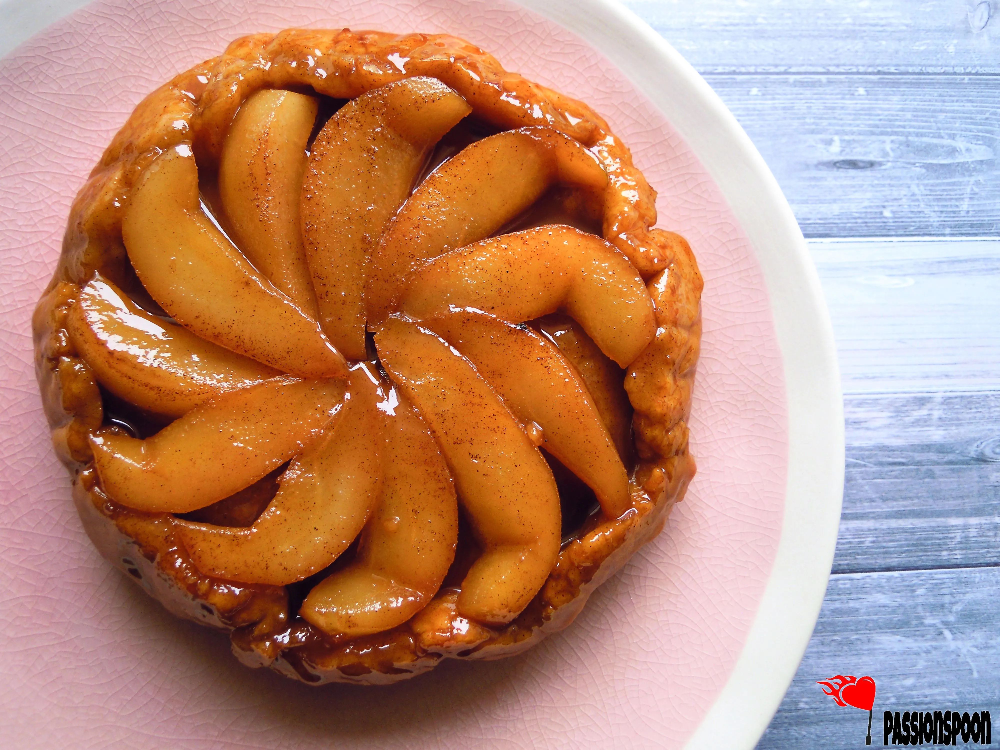

Tarte Tatin is a classic French upside-down caramelized apple tart with a buttery pastry crust. This elegant dessert balances sweet and tart flavors beautifully, with tender caramelized apples atop a crisp, flaky crust. Originally created by accident at the Hotel Tatin in the 1880s, this dessert has become a beloved staple of French cuisine.
Ingredients
- 6-8 firm apples (Granny Smith or Honeycrisp)
- 1 sheet puff pastry, thawed
- 3/4 cup granulated sugar
- 6 tablespoons unsalted butter
- 1 teaspoon vanilla extract
- 1/4 teaspoon cinnamon
- Pinch of salt
- 1 tablespoon lemon juice
- Vanilla ice cream or crème fraîche for serving
Preparation
Tarte Tatin is a beautiful dessert that requires careful caramelization of the apples before being topped with pastry and baked upside down. The magic happens when you flip the tart after baking, revealing the beautifully arranged caramelized apples on top of the golden pastry.
Chef's Tips
- Choose firm apples that will hold their shape during cooking.
- Watch the caramel carefully as it can burn quickly.
- Let the tart cool for 10 minutes before inverting to prevent the caramel from being too runny.
- Serve warm with a scoop of vanilla ice cream or a dollop of crème fraîche.